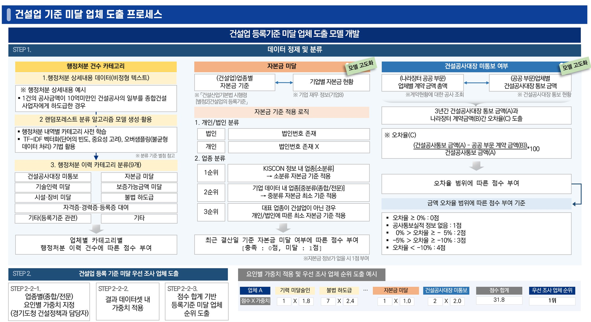

홈
분석 모델
건설업 등록기준 미달업체
분석개요
건설업 등록 기준 미달 업체를 도출하기 위한 빅데이터 분석
분석 페이지별 우측 상단의 이용가이드 내 상세 내용과 해석 방법이 포함되어있으니 참고부탁드립니다.
범례가 있는 분석 결과는 범례 클릭을 통해 그래프에 표현되는 그래프를 끄거나 켤 수 있습니다.
모델 개요
3가지 요인(행정처분 건수, 자본금 미달, 건설공사대장 통보 현황)을 활용하여 점수 기반의 건설업 등록기준 미달 업체 도출
행정처분 건수 : 국토교통부에서 제공하는 건설업체 행정처분 정보를 활용하여 각 업체별 행정처분 종류별 건수 도출
자본금 미달 : 민간 기업정보 데이터를 활용하여 업체별 자본금 미달 여부 도출
건설공사대장 미통보 : 조달청(나라장터) 공공 분야 계약 금액과 KISCON(건설산업지식정보 시스템) 건설공사대장 통보 실적을 비교하여 건설공사대장 미통보 여부 도출
분석 데이터
[공공 데이터] KISCON 건설업체정보 서비스
건설업체등록, 양도신고, 법인합병신고, 상속신고, 행정처분, 폐업신고
[민간 데이터] 기업정보 데이터
경기도 소재 기업정보, 기업정보 재무정보
[공공 데이터] 나라장터 계약현황
공공 부문 계약현황, 나라장터 수요기관 등록내역
[웹 크롤링] 건설공사대장 통보 현황
업체별 공공 부문 건설공사대장 통보 현황(3년)
데이터 업데이트 주기
KISCON 건설업체정보서비스 : 주 단위
민간 데이터 : 월 단위
나라장터 계약현황 : 월 단위
건설공사대장 통보 현황: 월 단위
업체정보 관리 페이지에 신규로 등록한 업체일 경우, 우선조사기업과 모형분석은 최소 일주일 이후에 조회 가능
분석 절차 및 결과 예시
분석절차
1. 데이터 수집
건설업 등록기준 미달 업체 도출을 위해 공공 데이터(건설업체 정보, 행정처분, 나라장터 계약현황, 건설공사대장 통보)와 경기도 내부 기업정보(기업 재무정보) 수집ㅅ
2. 데이터 정제 및 분류
행정처분 건수 카테고리
행정처분 내역별 카테고리 분류를 위한 랜덤포레스트 분류 알고리즘 모델 생성
행정처분 이력 카테고리 9가지로 분류 후 이력 건수에 따른 점수 부여
행정처분 이력 카테고리 : 건설공사대장 미통보, 자본금 미달, 기술인력 미달, 보증가능금액 미달, 시설·장비 미달, 불법 하도급, 자격증·경력증·등록증 대여, 기타(등록기준 관련), 기타
자본금 미달
건설업종별 자본금 기준*과 기업별 자본금 비교를 통해 자본금 미달 여부 도출
「건설산업기본법 시행령 [별첨2]건설업의 등록기준
최근 결산일 기준 자본금 미달 여부에 따른 점수 부여
점수 부여 기준 : 충족 : 0점, 미달 : 1점
건설공사대장 미통보 여부
나라장터 내 공공부문 계약 금액 총액과 건설산업지식정보시스템 내 공공 부문 건설공사대장 통보 금액 비교를 통해 건설공사대장 미통보 여부 도출
계약 금액과 통보 금액 간 오차율에 따른 상이한 점수 부여
점수 부여 기준
- 오차율 ≥ 0% : 0점
- 공사통보실적 정보 없음 : 1점
- 0% ＞ 오차율 ≥ -( 5%) : 2점
- (-5%) ＞ 오차율 ≥ (-10%) : 3점
- 오차율 ＜ (-10%) : 4점
3.건설업 등록 기준 미달 우선 조사 업체 도출
업종별(종합/전문) 요인별 가중치 지정* 및 가중치 적용
경기도청 건설정책과 담당자 가중치 지정
점수 합계 기반 등록기준 미달 업체 순위 도출
(예시: 업체 A의 경우, 기력 미달 요인 점수와 가중치 등을 곱하여 총점을 산출하고 우선 조사 순위 1위 선정)

검색 필터
분석종류
성연령별 유동인구 분석
요일별 유동인구 분석
시간대별 유동인구 분석
유입지별 유동인구 분석
분석영역
가평군
고양시
고양시 덕양군
전체
남성 전체
10대 남성
기준연월
기준연월
분석기간
달력 열기
이전 년도
2026년
다음 년도
1월
2월
3월
4월
5월
6월
7월
8월
9월
10월
11월
12월
성별/연령
전체
남성 전체
10대 남성
초기화
분석하기
닫기